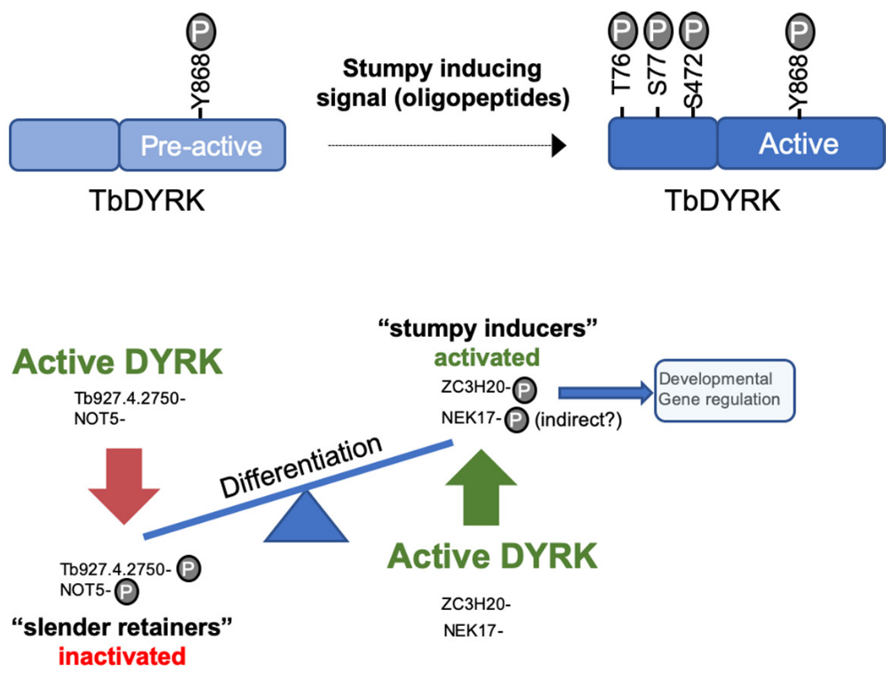
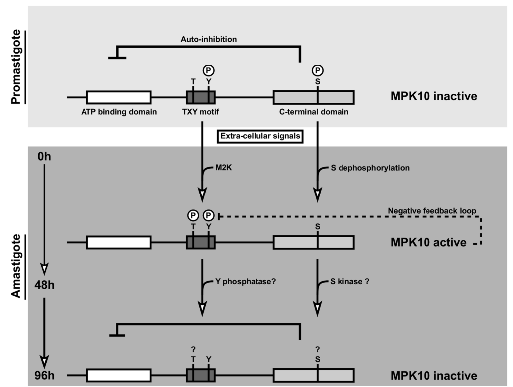

Past Projects
Post-doctorat:
Study of the role of a DYRK kinase (TbDYRK) in the quorum-sensing response of Trypanosoma brucei.
We developed a pipeline for a systematic analysis of the effect of point mutations and deletions of key residues or regions of interest for the protein kinase function and on the phenotype of differentiation of the parasite. In more detail, this pipeline is based on the development of in-gel kinase assays1 and in vitro and in vivo analysis of the effect of the mutations on the slender to stumpy differentiation phenotype of T. brucei. These enabled us to identify key residues for the kinase regulation and key functional residues for the function of TbDYRK that were evolutionary divergent compared the those classically found in this protein kinase family in other model organisms.
The phosphoproteome of a TbDYRK null mutant was then compared to parental cells by quantitative mass spectrometry using TMT isobaric labelling to identify the pathways in which TbDYRK is implicated. As a complementary approach, we also performed a kinase assay on parasite lysates using a non-mutated and an inactive mutant of the kinase, purified from the insect cell system. These complementary approaches, followed by generation of knock-downs (using RNAi) and knock-outs (using CrispR/Cas9), confirmed direct interaction of effectors with TbDYRK and their involvement in the quorum-sensing differentiation. For example, the negative regulator of transcription NOT5 was identified as a substrate of TbDYRK potentially inactivated by phosphorylation. Furthermore, NOT5 knock-down led parasites to differentiate prematurely in mice. Conversely, TbDYRK phosphorylates the zinc finger protein ZC3H20, an mRNA regulator that promotes for stumpy formation, as confirmed by the inability of the knocked-out cell line to differentiate. These results suggest that TbDYRK can both inhibit ‘slender retainer’ proteins and activate ‘stumpy inducer’ molecules by phosphorylation, driving differentiation (model presented in Figure 1). To decipher in more details the regulation role played by the kinase TbDYRK up to a single amino acid, we identified the phosphorylated residues on one of its substrates, ZC3H20. We then performed endogenous single point mutations, using an adapted version of our CrispR system, to eliminate the phosphorylable amino acids. Those mutations led to a complete incapacity of the parasite to differentiate from slender to stumpy form in vitro and in vivo. These results confirmed the identification of the pathway, from the signal induction, leading to the activation mechanisms of the TbDYRK, which in turn phosphorylates and activates ‘stumpy inducers’ proteins such as ZC3H20 and also phosphorylates and inhibits ‘slender retainer’ proteins such as NOT5. All these results were included in a publication in eLife in 20202.
As part of a collaborative project led by Dr. Lindsay McDonald, we analysed results of a quantitative phosphoproteomic study and identified a list of potential substrates of the T. brucei MEKK1 protein kinase implicated in the slender to stumpy differentiation. The phosphoproteomic analysis identified molecules with altered expression and phosphorylation profiles in MEKK1 null mutants, including another component in the quorum-sensing pathway, NEK17. This collaboration was rewarded by a publication in PLOS Pathogen in 20183.
I also contributed to the project initiated by Dr. Federico Rojas for the development of a trypanosome in vitro differentiation system4. The successful development and release to the community of this in vitro system will allow reduction of animal use by the trypanosome research community.
Figure 1:
{: .box-figure}

{: .mx-auto.d-block :} Model of the activation mechanisms and function of TbDYRK. A- Phosphorylation of the pre-active kinase in response to the stumpy inducing signal results in activation of the kinase. b- Consequences of the activation of TbDYRK for the regulation of differentiation, through the inactivation of slender retainer molecules and the activation of stumpy inducers.What is the role and how are regulated T. brucei stress granules during parasite differentiation?
For this project, that requires in-situ tagging and imaging, I supervised a Honours student, Eliza Waskett, who was rewarded with the SBS Honours Prize 2020 for her work under my supervision. We were able to determine that stress granules5 were dynamically relocated during the course of in vivo differentiation.
We have also developed a proximity labelling system using the APEX2 tag to allow the identification of new components of stress granules formed during the quorum sensing differentiation. Indeed, we observed that the composition of differentiation granules is different from glucose starvation stress granules.
In parallel, we performed a bioinformatic analysis during the lockdown imposed by the current COVID outbreak that aimed to identify low complexity regions (LCRs) in the proteome of T. brucei. Indeed, the formation of stress granules occurs through liquid-liquid phase separation of the proteins that is facilitated by the presence of low complexity regions. We were able to determine an enrichment of LCRs in protein’s extremities and particularly on the C-terminal regions of proteins involved in nucleic acid binding. We then linked the regulation of these regions to post-translational modifications and were able to show that phosphorylations are strongly enriched in LCRs. These results open the way to study the regulations of stress granules formation by the action of protein kinases and phosphatases in kinetoplastids parasites and were released in a publication in Open Wellcome research in 20206.
PhD:
Functional characterisation of Leishmania MAP kinase 10 (MAPK10) during parasite the differentiation from the promastigote insect stage to the mammalian intracellular amastigote stage.
Using the plasmid shuffle technology7, we generated a conditional knock-out of MPK10 in L. donovani. Our results showed that MAPK10 is not essential in the promastigote or differentiated amastigote stage, but is required during amastigote differentiation, and in particular for the adaptation to the elevated temperature upon transmission to the mammallian host.
Using phosphoproteomic approaches, we identified multiple phosphorylated residues on MAPK10. This analysis, combined with the identification of divergent residues or unique domains in the kinase core of MAPK10 enabled us to perform a structure/function analysis of MPK10. We developed a FACS based assay to systematically study 1) the expression level of the ectopically mutated and WT protein kinases and 2) the effect of these mutations on the phenotype of in vitro differentiation from promatigotes to axenic amastigotes. Additionally, we purified the tagged mutated versions of the kinase directly from parasites and developed an in-gel kinase assay, based on the transfer of a radiolabelled phosphate from ATP to the generic MBP substrate. This systematic analysis of divergent residues and domains of MAPK10 enabled us to reveal unique regulation mechanisms of the kinase as described in Figure 2. These results were shared to the community by a publication in PLOS Pathogen in 2014[^8].
Figure 2:
{: .box-figure}

{: .mx-auto.d-block :} MAPK10 is partially active in promastigotes and kept in a standby configuration by auto-inhibition. During the first 48 h of axenic amastigote differentiation, MAPK10 is released from auto-inhibition. This activity seems to be controlled by a feedback loop where MAPK10 regulates its own tyrosine phosphorylation levels. Thereafter, MAPK10 activity is decreased, likely due to dephosphorylation of the TxY motif and phosphorylation of S395.Bibliography
Footnotes
Szöőr, B. & Cayla, M. Gel-Based Methods for the Investigation of Signal Transduction Pathways in Trypanosoma brucei. in Methods in molecular biology (Clifton, N.J.) (eds. Michels, P. A. M., Ginger, M. L. & Zilberstein, D.) vol. 2116 497–522 (NLM (Medline) - Springer US, 2020).↩︎
Cayla, M., McDonald, L., MacGregor, P. & Matthews, K. An atypical DYRK kinase connects quorum-sensing with posttranscriptional gene regulation in Trypanosoma brucei. Elife 9, 1–33 (2020).↩︎
McDonald, L. Cayla, M., Ivens, A., Mony, B., MacGregor, P., Silvester, E., McWilliam, K., Matthews, K., Non-linear hierarchy of the quorum sensing signalling pathway in bloodstream form African trypanosomes. PLoS Pathog. 14, e1007145 (2018).↩︎
Rojas, F., Cayla, M., Matthews, K. Basement membrane proteins as a substrate for efficient trypanosoma brucei differentiation in vitro. PLoS Neglected Tropical Diseases 15, e0009284 (2021).↩︎
Fritz, M. et al. Novel insights into RNP granules by employing the trypanosome’s microtubule skeleton as a molecular sieve. Nucleic Acids Res. 43, 8013–8032 (2015).↩︎
Cayla, M., Matthews, K. R. & Ivens, A. C. A global analysis of low-complexity regions in the Trypanosoma brucei proteome reveals enrichment in the C-terminus of nucleic acid binding proteins providing potential targets of phosphorylation. Wellcome Open Res. 5, 219 (2020).↩︎
Dacher, M., Morales, M., Pescher, P., Leclercq, O., Rachidi, N., Prina, E., Cayla, M., Descoteaux, A., Späth, G. Probing druggability and biological function of essential proteins in Leishmania combining facilitated null mutant and plasmid shuffle analyses. Mol. Microbiol. 93, 146–166 (2014).↩︎